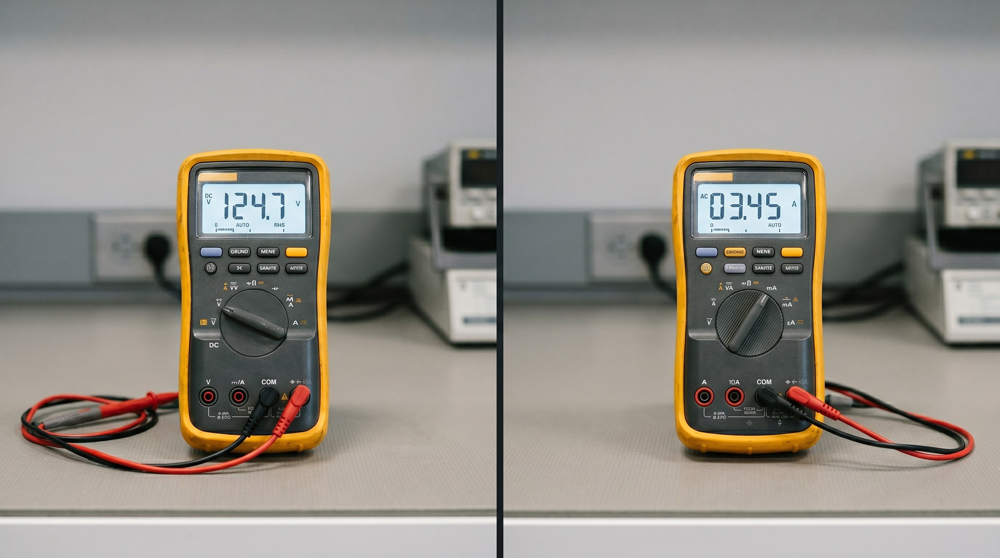

Learn how a voltmeter and an ammeter work, how to connect each one correctly in a circuit, and why mixing them up is one of the most common — and most damaging — mistakes in practical physics.
Every electric circuit has two fundamental quantities you need to measure: the voltage (the electrical "push" that drives current) and the current (the actual flow of electric charge). A voltmeter measures voltage; an ammeter measures current. They look similar, they both connect to circuits, and they both give readings in numbers — but they work in completely opposite ways and connect in completely different positions. Confusing the two can destroy a real meter in seconds.
This guide explains exactly what each instrument does, how to use it correctly, and how to answer every common exam question on this topic with confidence.

A voltmeter is an instrument that measures potential difference (voltage) between two points in a circuit. Potential difference tells you how much energy each unit of charge loses as it passes from one point to another. In practical terms, it tells you the "electrical pressure" that drives current through a component.
Voltage is measured in Volts (V), named after Alessandro Volta. The symbol for a voltmeter in a circuit diagram is a circle containing the letter V.
A voltmeter works by having a very high internal resistance — ideally infinite. When you connect it across a component, almost no current flows through the voltmeter itself. Instead, the meter detects the tiny potential difference between its two terminals and converts it into a reading on the display. Because it draws almost no current, it does not disturb the circuit it is measuring.
In a digital voltmeter (like the one in the image above), the internal resistance can exceed 10 MΩ (10 million ohms). This makes it essentially invisible to the rest of the circuit — a key design requirement for an accurate measurement.
You always connect a voltmeter in parallel with the component you want to measure. This means you place it across the two terminals of that component — one probe on each side. The voltmeter sits beside the component, not in the main path of current flow.
Think of it like a pressure gauge on a water pipe: you tap into both sides of a section to measure the pressure difference, but you do not break the pipe open to insert the gauge into the flow.
Connecting a voltmeter in series is a serious mistake. Because a voltmeter has very high resistance, placing it in series blocks almost all current in the circuit. The circuit effectively stops working, and the voltmeter reads the full supply voltage rather than the voltage across the target component. No damage occurs (since very little current flows), but the reading is completely meaningless.
An ammeter is an instrument that measures electric current — the rate at which electric charge flows through a point in a circuit. A higher reading means more charge passes that point every second.
Current is measured in Amperes (A), often shortened to "amps," named after André-Marie Ampère. The symbol for an ammeter in a circuit diagram is a circle containing the letter A.
An ammeter works in the opposite way to a voltmeter. It has a very low internal resistance — ideally zero. The entire current of the circuit flows through the ammeter, and the instrument measures how much charge passes through it per second. Because its resistance is close to zero, it adds almost no opposition to the circuit and causes minimal disruption to the current it is measuring.
A typical ammeter has an internal resistance of just a few milliohms. Any higher, and the ammeter itself would change the current it was trying to measure — an obvious problem for accuracy.
You always connect an ammeter in series with the component you want to measure. This means you break the circuit at one point and insert the ammeter into that gap, so the full current flows through it.
Think of it like a water flow meter in a pipe: you cut the pipe open at one point and install the meter directly in the flow — all the water must pass through the meter for an accurate reading.
This is the most dangerous mistake in practical electricity. An ammeter has near-zero resistance. When you connect it in parallel across a component or power supply, it creates a short circuit. An enormous current surges through the ammeter, which can instantly burn out the instrument's internal fuse, destroy the meter permanently, and — with a mains supply — create a serious safety hazard. Never connect an ammeter in parallel.
The table below summarises every key difference. Examiners regularly ask you to state two or three of these distinctions — knowing all of them gives you flexibility to choose the clearest answer.
| Property | Voltmeter | Ammeter |
|---|---|---|
| Measures | Potential difference (voltage) | Electric current |
| Unit | Volts (V) | Amperes (A) |
| Circuit symbol | Circle with V | Circle with A |
| Connection | Parallel (across a component) | Series (in line with the circuit) |
| Internal resistance | Very high (ideally infinite) | Very low (ideally zero) |
| Current through it | Almost none | Full circuit current |
| If connected wrongly | Circuit stops working; meaningless reading | Short circuit; meter destroyed |
| Named after | Alessandro Volta | André-Marie Ampère |
Whether your circuit is a series or parallel arrangement, the connection rules for both instruments stay the same. Only the positions and the readings change.
Current is identical at every point in a series circuit, so you can place the ammeter anywhere in the loop and get the same reading. Voltage, however, splits across each component — the voltages across each component add up to the supply voltage. Connect the voltmeter across each individual component to measure its share.
Voltage is identical across every branch in a parallel circuit. Connect the voltmeter across any branch and you read the same supply voltage. Current, however, splits between branches — the branch with less resistance carries more current. Place a separate ammeter in each branch to measure each branch current individually. The ammeter in the main line (before the branches) reads the total current.
In modern laboratories and the image at the top of this page, a single device called a multimeter performs both roles. You select voltage mode (V) to use it as a voltmeter, or current mode (A) to use it as an ammeter. The dial also switches between DC (direct current) and AC (alternating current) measurements, and often includes resistance (Ω) measurement too.
Even though a multimeter does both jobs, the connection rules never change. When you select voltage mode, you still connect it in parallel. When you select current mode, you still connect it in series — and you move the red probe from the voltage input socket to the current (A) input socket. Failing to change the probe socket is one of the most common reasons a multimeter blows its internal fuse.
The image at the top of this article shows a clear example: the left multimeter has its dial set to DC voltage (V) and displays 124.7 V; the right multimeter has its dial set to AC current (A) and displays 3.45 A. Same physical device, completely different measurement and connection requirement.
Question: A student wants to measure the voltage across a resistor in a circuit. Describe how they should connect the voltmeter.
Answer: The student should connect the voltmeter in parallel with the resistor — one probe on each terminal of the resistor. The red (+) probe connects to the terminal at higher potential (closer to the positive terminal of the supply). No part of the main circuit needs to be broken.
Question: Explain why a voltmeter must have a very high resistance and an ammeter must have a very low resistance.
Answer: A voltmeter connects in parallel. If its resistance were low, significant current would flow through it, creating an alternative path that reduces the current through the measured component and changes the voltage it receives — making the reading inaccurate. High resistance ensures negligible current flows through the voltmeter, so it does not disturb the circuit.
An ammeter connects in series. If its resistance were high, it would add significant opposition to the circuit and reduce the current it is trying to measure — again giving an inaccurate reading. Near-zero resistance means the ammeter adds virtually nothing to the circuit's total resistance, leaving the current undisturbed.
Question: A student accidentally connects an ammeter in parallel across a battery. What happens and why?
Answer: The ammeter has near-zero resistance. Connecting it directly across the battery creates a short circuit with almost no resistance opposing the current. Ohm's Law (I = V ÷ R) gives an enormous current. This current surges through the ammeter, immediately blowing its internal fuse or burning out its internal wiring. The battery also discharges rapidly and may overheat. The ammeter is almost certainly destroyed.
Question: In a circuit diagram, a circle with the letter A sits in the main wire, and a circle with the letter V sits connected between two points across a lamp. What does each instrument measure?
Answer: The circle with A is the ammeter. It sits in series in the main wire and measures the current flowing through the circuit in Amperes. The circle with V is the voltmeter. It sits in parallel across the lamp and measures the potential difference across the lamp in Volts.
Once you fix the connection rule in your memory — parallel for voltage, series for current — every circuit question on this topic becomes straightforward. The internal resistance reasoning follows naturally: high resistance belongs in parallel (so it does not steal current), and low resistance belongs in series (so it does not block current).